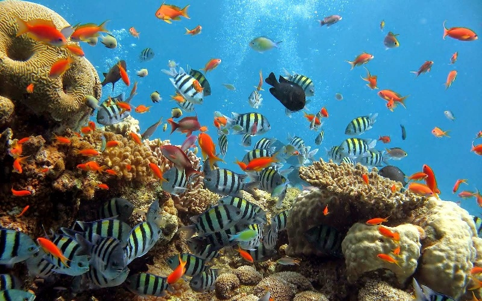

Taman Laut Bunaken
Sebelum dunia pariwisata bergeliat seperti saat ini. Indonesia telah menetapkan Bunaken sebagai Taman Nasional yang dilindungi. Kurang lebih selama 27 tahun. Keindahan biota laut kawasan ini terjaga dengan sangat baik. Dimana kurang lebih 58 jenis terumbu karang dan 90 sepesies ikan menghuni tempat ini.
Menariknya lagi, di tempat ini hadir beberapa spesies langka yang hanya ada di Bunaken saja. Salah satunya adalah Penyu Sisik Hawksbill. Penyu langka ini setiap harinya berputar-putar dan bermain di sekitaran terumbu karang. Penyu ini biasanya bercanda tawa dengan pohon damselfih, clownfish, angelfish dan masih banyak lagi.
Dengan luas sekitar 280 mil kawasan ini pun mendapatkan penghargaan berharga dari Unesco sebagai situs warisan dunia. Penghargaan ini memang sangat penting mengingat beberapa nelayan masih sering nakal dalam menangkap ikan. Padahal dengan nakalnya, mereka mengancam terumbu karang yang ada di dalamnya.
Sejarah
Setelah mengetahui keindahan taman nasional ini tidak ada salahnya bila mundur ke belakang sejenak untuk mengetahui bagaimana awal dari berdirinya kawasan ini. Baiklah mari kita simak hasil investigasinya di bawah ini.
Taman Nasional Bunaken pertama kali diresmikan pada tahun 1975. Taman ini bisa dibilang menjadi daerah yang terpencil. Maklum saja, pada waktu itu, masih masa orde baru dimana sobat native belum mengenal yang namanya liburan. Mungkin hanya segelintir umat yang paham mengenai arti liburan. Beberapa penyelam mencoba meneliti keindahan Laut Bunaken. Tetapi, para penyelam ini tidak langsung mulus menyelam begitu saja. Mereka mendapat arahan para nelayan untuk tidak menyelam ke dalam laut dikarenakan adanya roh jahat yang menghuninya.
Pada tahun 1970-an memang masih terkenal dengan unsur magis dan mitos mengenai cerita roh dan hantu. Apalagi beberapa waktu sebelum para nelayan ini menyelam, ada seorang nelayan yang meninggal dunia. Sehingga apa yang terjadi dihubungkan dengan ceirta yang sudah berkembang di kalangan ini.
Tetapi, para penyelam tersebut sedikit tidak percaya dengan cerita tersebut. Mereka pun akhirnya menyelam dan menemukan surga di bawah laut. Para penyelam ini pun akhirnya, memberikan ceritanya kepada Pemerintah setempat. Dengan berkoordinasi dengan pemerintah pusat terbentuklah Taman Nasional Bunaken.
Seperti diketahui bahwa banyak sekali spesies yang berada di Bunaken jenis terumbu karang yang beragam membuat kawasan ini selalu menjadi serbuan utama wisatawan nusantara dan mancanegara. Mereka pun tak segan-segan untuk menyapa ikan-ikan dan terumbu karang yang terlihat indah bagai lukisan ini.
Ekosistem Bunaken
Beberapa ikan yang akan menyapa sobat native bila berkunjung ke bawah adalah ikan kuda gusumi, ila gasi, lolosi ekor kuning, oci putih, goropa, dan pseudanthias. Sekawanan inilah yang bisa menjadi objek foto sobat native bila berada di bawah. Mereka yang sudah paham dengan para wisatawan pasti dengan senang hati bergaya mengikuti irama untuk diabadikan dalam sebuah bingkai foto.
Selain terumbu karang, Bunaken juga memiliki garis pantai yang esoktis dimana terdapat tumbuhan mangrove dengan jenis rhizopora sp., lumritzera sp., sonneratis sp., dan Brugukera sp.. Sekawanan mangrove yang akan menyapa sobat native dan memberikan pesona yang diinginkan.
Ada juga beberapa tumbuhan yang menghadirkan kesejukan dan keteduhan seperti pohon palem, silar, sagu, kelapa, dan woka. Mereka dengan sigap memberikan nuansa angin yang tidak akan pernah berhenti apalagi, saat panas terik matahari menyengat. Tidak ketinggalan pula beberapa jenis kepiting yang imut-imut namun sedikit galak, udang, moukuska, beberapa jenis burung seperti burung camar, merpati laut, dan juga bangau, tidak ketinggalan pula jenis monyet hitam sulawesi, polecat, dan rusa.